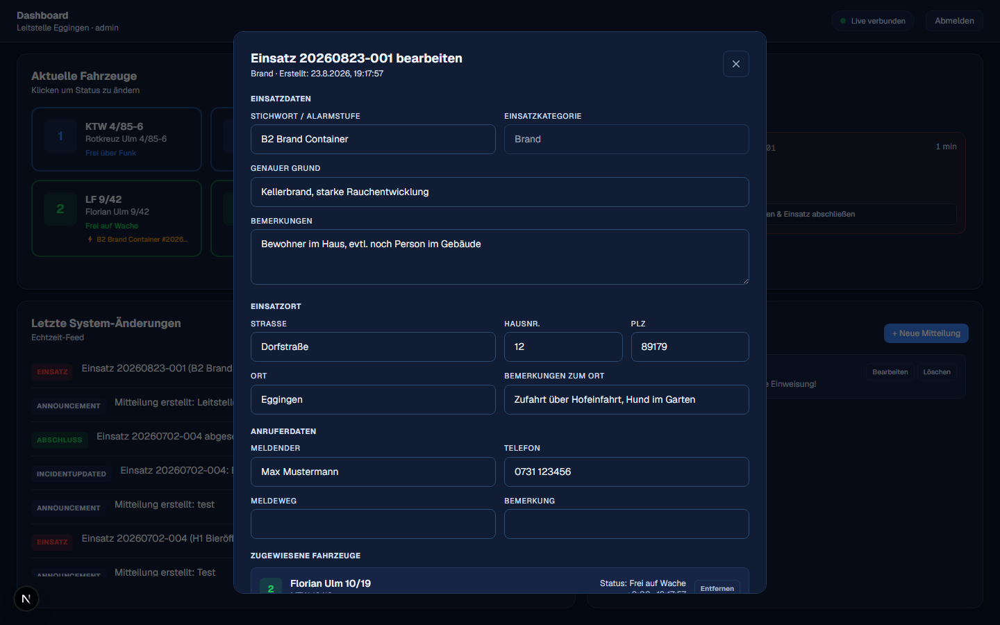
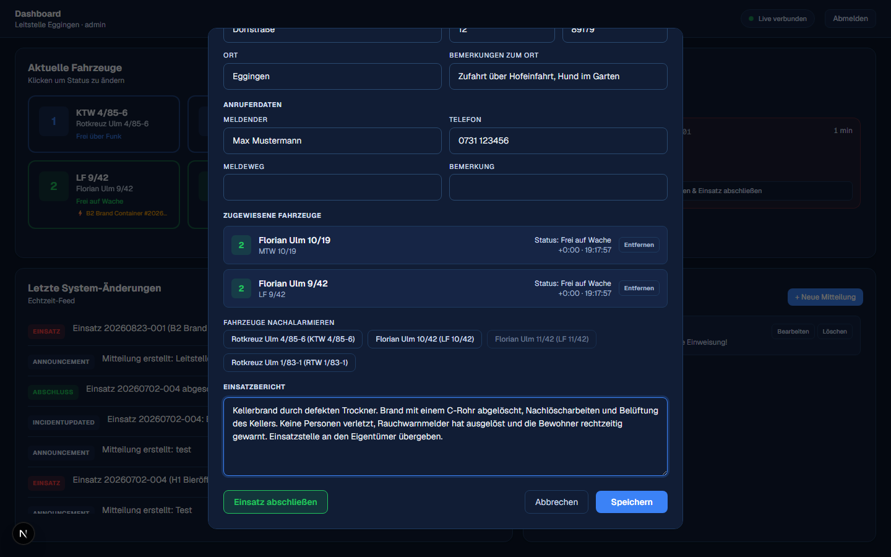
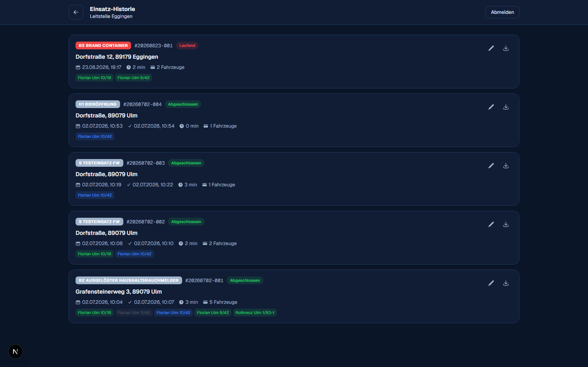
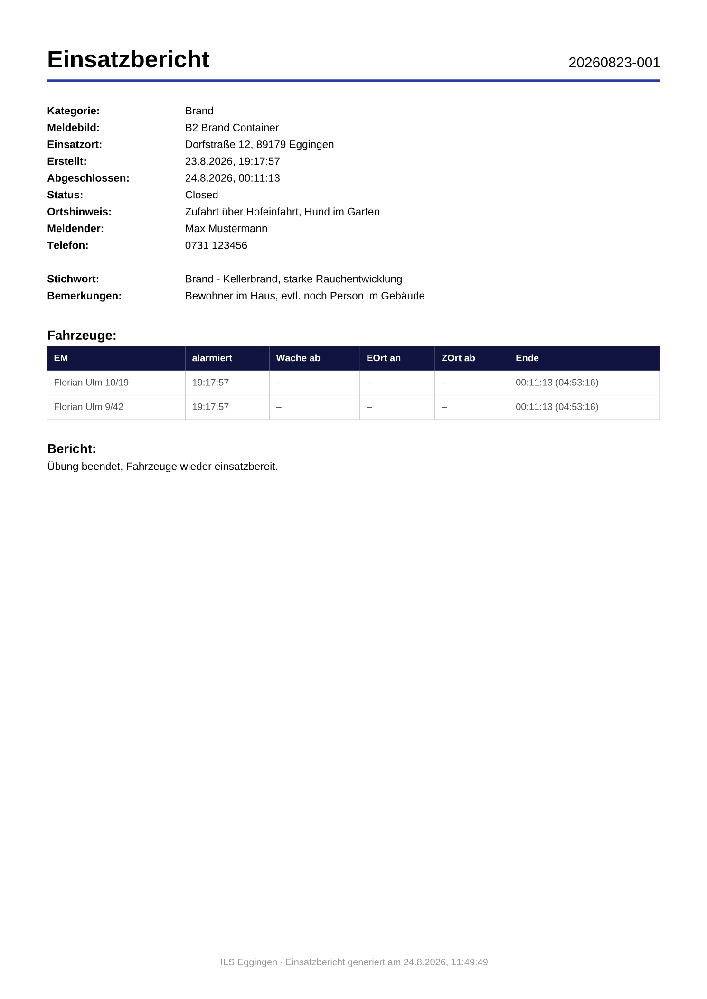

Bericht & Einsatz abschließen
Solange ein Einsatz läuft, kannst du ihn jederzeit bearbeiten: Fahrzeuge nachalarmieren, Angaben korrigieren und am Ende einen Bericht schreiben, bevor du ihn abschließt.
Einsatz öffnen
Auf dem Dashboard klickst du im Kasten „Laufende Einsätze“ auf einen Einsatz bzw. auf „Bericht schreiben & Einsatz abschließen“. Es öffnet sich ein Bearbeiten-Fenster mit allen Einsatzdaten.

Fahrzeuge nachalarmieren
Weiter unten im Fenster siehst du die zugewiesenen Fahrzeuge mit Status und Zeitstempel, sowie den Abschnitt „Fahrzeuge nachalarmieren“. Ein Klick auf ein verfügbares Fahrzeug fügt es dem Einsatz hinzu, benachrichtigt alle Monitore erneut und löst bei Bedarf einen erneuten Alarmdruck aus – markiert als Aktualisierung. Bereits gebundene oder außer Dienst befindliche Fahrzeuge sind auch hier gesperrt.
Einsatzbericht schreiben
Ganz unten findest du das Feld „Einsatzbericht“ – ein freies Textfeld für den Verlauf, die Maßnahmen und das Ergebnis des Einsatzes. Dieser Bericht ist Pflicht: Ein Einsatz lässt sich erst abschließen, wenn hier ein Text steht.

Der Button „Einsatz abschließen“ funktioniert erst, wenn im Berichtsfeld ein Text steht. Fehlt er, erscheint der Hinweis „Bitte zuerst einen Bericht schreiben…“.
Einsatz abschließen
-
„Einsatz abschließen“ klicken
Der Button ist erst aktiv, sobald ein Bericht eingetragen ist.
-
Sicherheitsabfrage bestätigen
Aus „Einsatz abschließen“ wird „Wirklich abschließen?“ – erst der zweite Klick schließt den Einsatz endgültig ab. So passiert nichts aus Versehen.
-
Fahrzeuge werden automatisch frei
Alle noch zugewiesenen Fahrzeuge werden vom Einsatz gelöst. Ihr FMS-Status springt automatisch auf „frei über Funk“ zurück – außer sie standen bereits auf „frei auf Wache“ oder „außer Dienst“, das bleibt erhalten.
Einsatz-Historie & PDF-Export
Über den Link „Einsatz-Historie anzeigen“ auf dem Dashboard siehst du alle vergangenen und laufenden Einsätze. Zu jedem Einsatz kannst du über das Download-Symbol einen fertig formatierten PDF-Einsatzbericht erzeugen – mit Einsatznummer, allen Stammdaten, der Fahrzeug-Zeitleiste und deinem geschriebenen Bericht.

Beispiel eines PDF-Einsatzberichts
So sieht der heruntergeladene Bericht aus – echtes Beispiel für den bereits abgeschlossenen Beispieleinsatz von oben:

Notizen aus „Bemerkungen zum Einsatzort“ (Zufahrt, Lage, Besonderheiten) tauchen automatisch auf dem Alarmdruck, im PDF-Bericht und in Push-Benachrichtigungen auf – du musst sie nirgends doppelt eintragen.